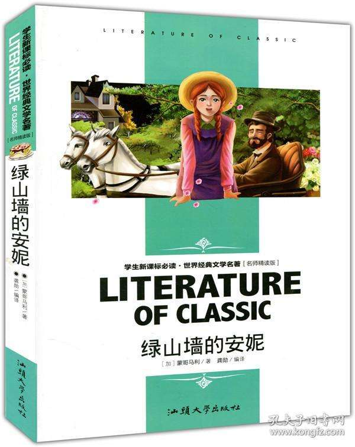
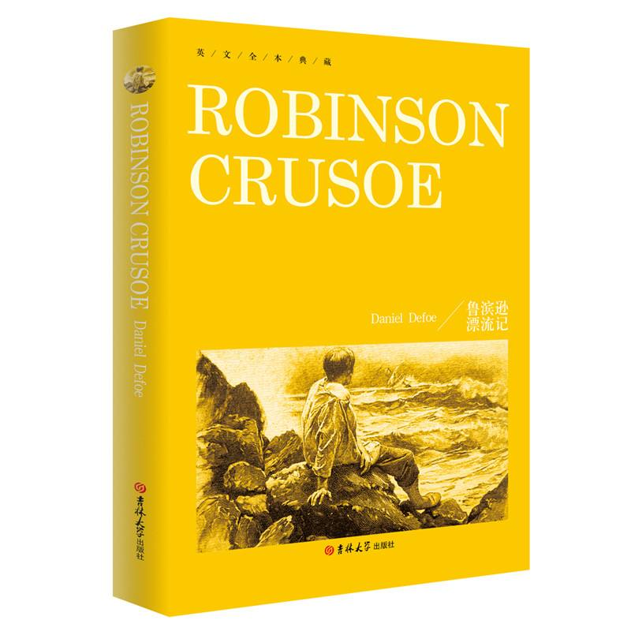
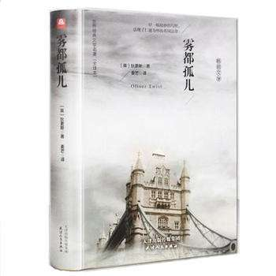

《绿山墙的安妮》是加拿大女作家露西·莫德·蒙哥马利创作的长篇小说。 《绿山墙的安妮》讲述了纯真善良、热爱生活的女主人公小安妮，自幼失去父母，11岁时被绿山墙的马修和玛丽拉兄妹领养，但她个性鲜明，富于幻想，而且自尊自强，凭借自己的刻苦勤奋，不但得到领养人的喜爱，也赢得老师和同学的关心和友谊。 成长与梦想是全书的主题，作者以安妮的故事告诉人们：只要胸怀梦想，不懈努力，生活就会丰富多彩，生命就会美丽多姿。 |
 |
|  | 《鲁滨逊漂流记》是英国作家丹尼尔·笛福的一部长篇小说。该书首次出版于1719年4月25日。 该作主要讲述了主人公鲁滨逊·克鲁索（Robinson Crusoe）出生于一个中产阶级家庭，一生志在遨游四海。一次在去非洲航海的途中遇到风暴，只身漂流到一个无人的荒岛上，开始了段与世隔绝的生活。他凭着强韧的意志与不懈的努力，在荒岛上顽强地生存下来，经过28年2个月零19天后得以返回故乡。 |
《雾都孤儿》：体现弱者战胜坎坷命运的感人读物。 作者：（英国）狄更斯（Charles Dickens） 一部文学史是人类从童真走向成熟的发展史，是一个个文学大师用如椽巨笔记载的人类的心灵史，也是承载人类良知与情感反思的思想史。阅读这些传世的文学名著就是在阅读最鲜活生动的历史，就是在与大师们做跨越时空的思想交流与情感交流，它会使一代代的读者获得心灵的滋养与巨大的审美满足。 |
 |